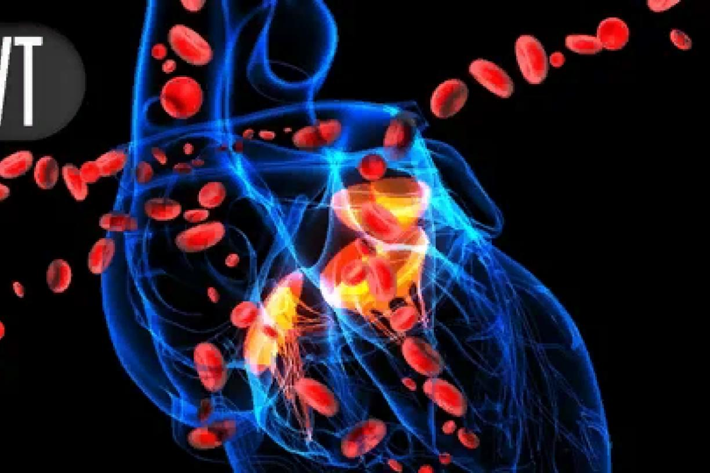
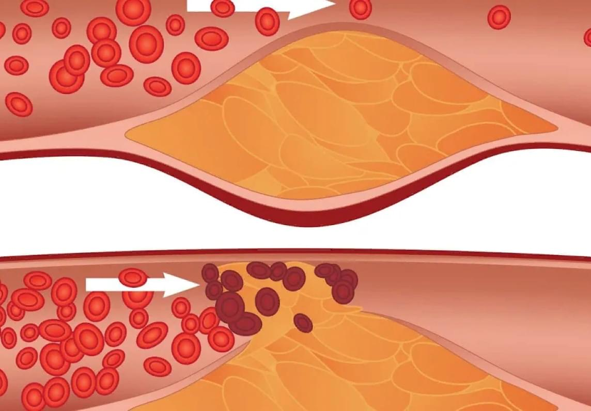

Профессор медицины Даниэль Карлос Гарсиа Сикейрос — не только успешный врач, но и счастливый человек. Он женат, имеет троих сыновей и пятерых внуков. Справляться с внучатами помогает мама доктора Гарсиа, 75-летняя Мария. Она мечтает, как поведет первого правнука в школу. А ведь 25 лет назад медики вынесли Марии приговор
Сегодня профессор Гарсиа пользуется большим авторитетом среди коллег, и ему благодарны тысячи пациентов изо всех уголков Мексики. Чего не скажешь о крупнейших производителях лекарств. Официальные представители аптечных сетей ненавидят профессора из Мехико за его секрет, который всерьез угрожает аптекам разорением
Доктор Даниэль Гарсиа убежден, что секрет здоровья и долголетия — это чистые сосуды. Но ни один из дорогих препаратов, которые стоят на аптечных полках, не в состоянии сделать сосуды чистыми, а человека — полностью здоровым. Профессор потратил годы на поиск эффективного средства борьбы с гипертонией и нашел его. Нам удалось узнать потрясающие подробности этих поисков.
Даниэль Карлос был еще ребенком, когда потерял отца. Мужчина ушел из жизни от сердечного приступа совсем молодым. Матери пришлось много и тяжело работать, чтобы обеспечивать детей самыми необходимыми вещами. Это были тяжелые времена, семья постоянно нуждалась. Когда женщина стала замечать, что сын интересуется медициной и мечтает о карьере врача, она приняла твердое решение: во что бы то ни стало дать ребенку достойное образование. Мария бралась за любую работу, и ничто не могло заставить ее отступить от цели. Мечта сына стать врачом должна была осуществиться!
Когда молодой Гарсиа подавал большие надежды как семейный врач, здоровье Марии уже вызывало серьезные опасения. Это неудивительно, ведь женщина так много жертвовала собой во имя будущего любимого сына. Доктор был всерьез обеспокоен состоянием здоровья матери, к которой он, несомненно, чувствовал не только сыновью любовь, но и глубокое чувство благодарности. Он возил женщину на консультации к известным кардиологам, покупал лучшие и самые дорогие лекарства, но ничего не помогало…
К регулярным скачкам кровяного давления, мучительным головным болям, бессоннице постепенно присоединились стенокардия и суставные боли, больная уже с трудом поднималась с постели. Мария из красивой зрелой женщины постепенно стала превращаться в пожилую беспомощную старуху. Стоит ли говорить о том, что сын не мог спокойно смотреть на страдания матери? Все свободное от работы время он посвящал поиску лекарства для горячо любимой мамы. Иногда по ночам, сидя у кровати больной, он думал: «Как же так? Зачем мне нужно было становиться врачом, если сейчас я не в силах помочь самому дорогому для меня человеку».
Уже совершенно отчаявшись спасти маму средствами официальной медицины, Даниэль Карлос Гарсиа решил испробовать альтернативные методы. Мужчина искал полезную информацию о народных снадобьях, собирал сведения о редких травах, беседовал с народными целителями. Знакомые медики смотрели на все эти искания скептически, но не вмешивались. Они понимающе молчали, считая, что коллега обезумел от отчаяния. Действительно, обратиться за помощью природы для практикующего врача считается немыслимым делом! Ведь классическая медицина не признает никакой альтернативы официальным подходам в лечении.
Когда бедная Мария уже не вставала с постели, доктор решил испробовать экспериментальный препарат, который он создал на основе редких целебных трав. Он начал давать матери свою настойку каждый день. И в одно прекрасное утро мужчина вошел в комнату больной и увидел ее стоящей у окна. Она заявила, что хочет прогуляться по магазинам! Она, которая еще недавно выглядела умирающей, чувствовала себя достаточно хорошо, чтобы выйти из дома! К этому моменту Мария не получала никакого лечения, за исключением нового состава, изобретенного сыном. Неужели случилось чудо?
Окрыленный достигнутым успехом, доктор Гарсиа изготовил новую порцию лекарства и попросил мать принимать его трижды в день в течение месяца, а потом продлил рекомендации еще на месяц. Через несколько месяцев Мария уже чувствовала себя настолько хорошо, что могла кататься на велосипеде!
Так личная история доктора из Мехико положила начало созданию эффективного препарата от гипертонии с 100% натуральным составом. Долгое время лекарство оставалось неизвестным. Точнее, о нем знали лишь единицы из ближайшего окружения врача, который собственноручно собирал компоненты и делал настойку. Но мечтой доктора было полноценное внедрение своего изобретения в производство. В итоге ему удалось найти единомышленников, благодаря чему сегодня о чудо-препарате знают многие.
Мы регулярно слышим ужасающую статистику смертности от недугов, связанных с сердцем и сосудами. Согласно свежим данным, от сердечно-сосудистых заболеваний в Латинской Америке умирают 50% населения. Но вообще статистически подтверждается, что практически каждый человек находится в группе риска, ведь почти у всех есть родственники, которые скончались от сердечно-сосудистых катастроф до 60 лет.
В течение жизни просвет внутри кровеносных сосудов постепенно сужается, потому что на их стенках откладывается холестерин и прочие вредные примеси. Это можно сравнить с тем, как постепенно загрязняется водопроводная система, когда управляющая компания за ней не следит. Если вовремя принимать меры по очистке труб, система будет работать исправно и без сбоев.
Примерно то же происходит в человеческих артериях. Если их внутренние стенки чистые, то организм работает как отлаженная система. Если же внутри непорядок, то это моментально отражается на всех элементах системы: коже, суставах, сердце, и, конечно же, на мозге. Образование наростов на внутренних стенках сосудов называется атеросклерозом.
В США и многих странах Европы считается нормой профилактика сосудистых патологий. Людям молодого и зрелого возраста в рамках государственного медицинского обслуживания рекомендуются программы по очищению кровеносных сосудов. К сожалению, в Мексике медицина придерживается совсем другой политики. Врачи назначают пациентам лекарства от гипертонии, которые лишь искусственно снижают давление, но при этом не воздействуют на причину проблемы. А между тем пациенты с гипертонической болезнью остро нуждаются в рекомендациях именно по очищению сосудов!
В соответствии с рекомендациями ВОЗ, нормальное артериальное давление у людей зрелого и пожилого возраста не должно превышать 140/90 мм ртутного столба. Препарат INCASOL приводит показатели давления в сосудах в норму. При этом лекарство действует мягко, в отличие от аптечных лекарств, которые могут резко «ронять» давление пациента. К тому же официальная статистика указывает на то, что аптечные препараты от давления имеют широкий спектр побочных проявлений.